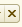

Обработка подбора товаров в документы поступления предназначена для облегчения процесса подбора номенклатуры в документы поступления аптечных товаров на склады больничной аптеки.
При формировании документа поступления на основании заказа поставщику или спецификации к договору перечень заказанных товаров заполняется автоматически в соответствии в заказом поставщику или спецификации, связанным с документом поступления.
При формировании документа поступления без указания заказа поставщику по кнопке Заполнить - Подобрать товары открывается форма подбора, в которой надо выбрать товар двойным щелчком левой кнопки мыши по конкретной позиции. Выбранные товары отражаются в нижнем окне формы подбора. По кнопке Перенести в документ товары попадают в табличную часть документа, после чего надо будет заполнить остальные реквизиты табличной части.
Если установить флажок Запрашивать количество по кнопке Все действия - Настройки, то при подборе товара можно сразу указать количество, цену, единицу измерения и серию поступающего товара.
Для ускорения поиска нужного товара в форме предусмотрен отбор по определенным признакам. Для этого нужно установить флажок Фильтр по и выбрать вариант для построения фильтра. Фильтр может быть:
Для быстрого отбора товара из списка товаров в форме подбора есть строка поиска, где надо ввести полное наименование или часть наименования товара. После нажатия клавиши Enter, в списке останутся товары, соответствующие наименованию в строке поиска. Для возврата к полному списку товаров надо очистить поле для поиска кнопкой .